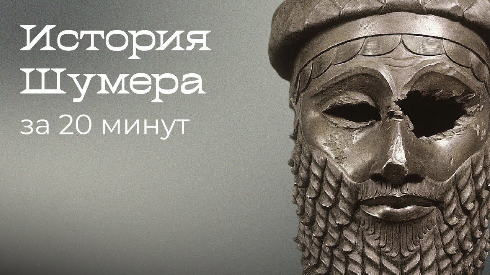

Делаю образовательные видео, рилсы и рекламу. Мой ролик о Шумере посмотрели три с половиной миллиона раз.
Смотреть работы ↓Видео-эссе · YouTube · 2020
Шумеры: история первой цивилизации за 20 минут

Смотреть на YouTube ↗3 490 612просмотров на октябрь 2026
- Канал
- Охта Студия, 40 тыс. подписчиков
- Опубликован
- 23 ноября 2020
- Формат
- 16:9, около 20 минут
- Работа
- Анимация и моушн-дизайн
Вертикальные ролики · 9:16
Рилсы
Серия «Threads» об истории искусства: как одна картина отвечает другой. Детали обведены прямо на картинах, путь показан на карте.
-
01 Japan → Van Gogh Ван Гог копирует гравюры Хиросигэ, Дебюсси берёт «Волну» Хокусая на обложку «Моря». 1080×1920 · 30 fps · 0:38 -
02 Where Judas sits До Леонардо Иуда сидел один по нашу сторону стола. Леонардо посадил его вместе со всеми. 1080×1920 · 30 fps · 0:32 -
03 Mona Lisa’s hands Рафаэль берёт её позу, Коро — руки, а кража 1911 года делает её самой известной картиной. 1080×1920 · 30 fps · 0:35
Где работал
Опыт
Образовательные проекты, интерфейсы и айдентика. С 2020 года снимаю видео-эссе для своего канала.
-
2020 — сейчас
Фриланс
Графический дизайнер
Айдентика, брендированные и маркетинговые материалы для клиентов.
-
2020 — 2023
Arzamas
Дизайнер
Интерфейсы образовательных проектов, мобильный UX, визуальные концепты спецпроектов.
-
2019 — 2020
Синхронизация
Дизайнер
Интерфейсы веб-курсов, интерактивные элементы, визуальные сценарии.
-
2017 — 2019
Level One
Дизайнер
Адаптивные интерфейсы образовательной платформы, пользовательские тесты.
Анимация
- After Effects
- Cavalry
- TouchDesigner
3D
- Cinema 4D, Octane
- Substance Designer
- Substance Painter
Дизайн
- Figma
- Photoshop
- Illustrator
Звук
- Ableton Live 12
Код
- TypeScript
- Vue
- Three.js
Коммерческие работы
Реклама
Раздел пополняется: здесь будут рекламные ролики в трёх форматах.